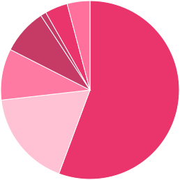
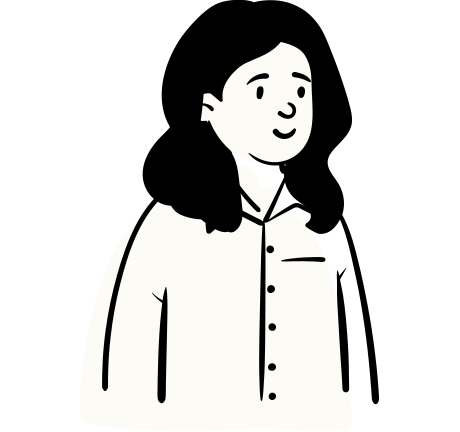

CODEBAR IMPACT REPORT 2025
We are dedicated to changing the face of tech.
codebar is a global community-based charity that champions diversity in the tech industry.
Since 2013, codebar has created tens of thousands of opportunities for minority group members to pursue a career in tech. Over the span of 12 years, we have held more than 2,700¹ workshops and events, and created a global community of over 27,500¹ students and coaches.
- 27k +
community members
- 2k +
events and workshops
- 36
global locations
- 150 +
community organisers
codebar stats as of 6th of January 2026 - stats.codebar.io
In this impact report, we tell you more about the codebar community and assess how our initiatives have made careers in tech more accessible for minorities from all over the world.
Despite the challenges this year brought, we remained committed to our mission by adapting and innovating to continue supporting our community as much as possible. These efforts are reflected in the findings captured through a community-wide survey. This feedback will drive improvements in future initiatives, ensuring we can further our cause and make an even greater impact!
Our work is the answer to the diversity problem in tech.
Diversity is still a major issue in the tech industry, despite being one of the world’s fastest growing fields. Women represent 52% of the UK population, but only 20% of software engineers. This disparity is even more stark for Black people, who make up just 5% of the tech sector.

Through our initiatives, we provide education, training, mentorship and networking opportunities for members of under-represented groups in tech. We believe in the strength that diversity brings and the importance of diverse thinking in an industry where innovation is a constant.
Talent Tech Charter 2024 Diversity Report
Our global community
Two thirds of our community members find us via word of mouth, meaning codebar has been able to grow organically and establish chapters across the world!
20,163 students and 7,386 coaches in 36 chapters worldwide
Breaking down our global subscriptions across key regions.
UK AND EUROPE
- 28 CHAPTERS
- 15,765 STUDENTS
- 5,912 COACHES
AMERICA
- 4 CHAPTERS
- 1,308 STUDENTS
- 401 COACHES
AFRICA
- 2 CHAPTERS
- 107 STUDENTS
- 43 COACHES
ASIA-PACIFIC
- 2 CHAPTERS
- 296 STUDENTS
- 98 COACHES
We work to create a safe and inclusive space for all, regardless of ethnicity, gender, and sexual orientation.
As a result of our commitment to this, 75% of our community members described codebar as welcoming and 53% describe our community as passionate and/or inspirational.
Ethnicity

- 56.3%
- White
- 14.7%
- Asian
- 10.2%
- Black
- 9.6%
- Mixed
- 3.4%
- Other
- 2%
- Hispanic
- 2.2%
- Arab
- 7.7%
- Prefer not to say
Gender

- 55%
- Female
- 37.7%
- Male
- 4.5%
- Non-binary
- 0.6%
- Trans female
- 0.3%
- Trans male
- 1.9%
- Other
Age
- 7.3%
- 18-24
- 41.9%
- 25-34
- 32.6%
- 35-44
- 12.5%
- 45-54
- 5.7%
- 55 and above
85% said the skills they have learnt at codebar have helped them find a job in the tech industry
54% felt that codebar has made a positive impact to their confidence
62% find that our community is helpful and / or specialised
55% of our community are returning members


codebar's growth has been entirely organic, driven by individuals in each location deciding to make a difference. This speaks volumes about our incredible community and highlights the growing demand for change in the tech industry.
Kimberley Cook, Director of codebar

Industry partners
The lack of diversity in tech has rightfully gained increasing attention over the years.
Many companies, including Financial Times, T.Rowe Price, and Google - all of which codebar has proudly partnered with - have made commitments to fostering inclusivity and diversity within their organisations, setting clear goals to drive meaningful change.
codebar values working with partners in the industry to improve inclusion in the sector, giving our community members the chance to change the face of the tech industry.
- 726 industry partners in 12 years
- 23 new partners in 2025
- Over 75% of companies have hosted more than 1 workshop
codebar connects tech companies with a diverse untapped talent pool full of potential
Through our industry partnerships, we’ve created thousands of career opportunities for the codebar community. 85% of our community members felt that the skills acquired through codebar would help them find a job in the tech industry.
In return, tech companies have gained access to a diverse talent pool of skilled individuals who bring fresh ideas, innovative thinking, and a passion for growth - while enriching teams with their unique perspectives and varied life experiences.
Big News,
BIGGER Opportunities
To facilitate change in the tech industry, and encourage long-term partnerships, codebar offers a partnership programme. Companies can donate a set amount of money in a tier-based system, which can offer them a set of rewards. For instance, as a gold partner, businesses can receive 15 job listing on our job board, a logo listed on our sponsors page, collaboration on multiple events throughout the year, and much more.
Some of our Key Industry Partners
codebar Stories
Last year saw the launch of our podcast, “codebar Stories.” This podcast has given us the opportunity to sit down with industry professionals, and partners, to showcase the different stories and voices in the tech industry.
With over 750 listens in season one, we hope to inspire others to pursue a career in the tech industry while also bringing awareness to codebar and our mission.

Season two coming
Spring 2026!
10 industry professionals’ stories showcased to inspire our audience
Impactful stories that demonstrate our influence. For instance: “codebar holds a special place in my heart, as it helped me grow not only as a coder but also as the person I am today"
Engagement from businesses such as Compare the Market and Skyscanner, as well as codebar community members
Case studies
codebar has something for every community member to grow within a setting that suits them best. Over the years, our initiatives have grown from offering regular free workshops to organising festivals, job fairs, and hosting community-run events. We run virtual and in-person events to reach as many people as possible. From this, our attendees say:
“The community is fantastic. I really enjoy hearing about people’s journeys. [There are] so many different paths people are walking on! And people are generally amazingly helpful. I love being part of codebar and going to events. I feel I belong. I feel I have my community.”
“The codebar community is incredibly supportive and ensures that anyone learning programming or improving their programming skills is very welcome. If it wasn’t for the codebar community, I doubt I would still be working in tech.”
- 73% of our community did not work in tech before codebar
- 51% of people who attended an event said the skills they learnt helped them find a job in the industry
Workshops
It all started with our workshops. To make tech careers more accessible, we began running regular free programming workshops in October 2013. These workshops take place all over the world and are led by developers who choose to volunteer as coaches with us.
Through our workshops, we have created vibrant, collaborative environments for minorities to learn HTML/CSS, JavaScript, Ruby, Python, and Git. Companies partner with us to host these workshops at their space, therefore helping aspiring developers expand their industry exposure early in their careers.
Our attendees are able to learn and thrive in these workshops, with one community member stating: “Each time I would come out of a workshop feeling energised, and that would help me keep focused on my journey and not give up.”
- Our workshops connect minorities to dedicated coaches who want to see them succeed
- 2,500 workshops and counting
- 90% of community members have given us a 5 star rating after a workshop
codebar festival
Launched in 2021, codebar Festival is our annual five-day hybrid event that focuses on three key areas: coding, career development, and well-being. Attendees have the opportunity to participate in talks, panels, and hands-on technical workshops, as well as network with industry professionals. We have received amazing feedback from attendees, with one highlighting the networking benefits of the event: “I made a great friend with a speaker I connected with at the last codebar Festival! Our connection thereafter has helped embolden my thinking on a couple of subjects and has influenced me to steer the next steps of my career in a certain direction.”
After five successful years of running codebar Festival, we are excited to see its return for a sixth year in 2026.
- 2,647 total attendees
- 9.5 post-event survey score
- codebar Festival empowers our community to take on a holistic approach to a tech career
uncodebar
uncodebar cultivates authentic spaces for genuine conversations and growth.
Now in its 11th year, uncodebar is an annual event that is 100% participant-led. It is our version of an unconference, which can be defined as a "loosely structured open space event emphasising the informal exchange of information and ideas between participants."
During uncodebar, community members propose talks, panels, workshops, and decide which topics they’d like to focus on for the day before convening in separate breakout sessions. These topics include anything related to web development, software development, game development, learning, mentoring, and community. Anyone is welcome to participate, whether you’re a seasoned developer or a first-time speaker.
uncodebar is a testament to the proactive and dedicated spirit of codebar. Everything lies in the hands of our community and, through their involvement, we grow and thrive as one.

Other community initiatives

WORKSHOPS
Virtual & In Person Workshops
Students and Coaches paired together working through tutorials or personal projects.

EVENTS
Events
CV Reviews, practice interviews, deep-dive technical workshops. They can be anything!

PANELS
Career Panels
Hear from experts in the industry.
Here are just some of the one-off events we’ve ran over the past 12 years
- 30 Days of Python
- Build Your Own Website
- Code, Explore, Create
- codebar hacks Monzo
- Intro To Dev Ops
- Intro To Android Dev
- Intro To React Native
- Intro To Android Dev
- Ladies That UX
- Micro Bit Workshop
- Mind The Code
- Trans Code
Thoughts from our community: Coaches
50% of coaches say they volunteer to drive positive change in the industry

codebar is a genuine community and genuine people who aren't in it for anything else other than to drive change.

It's amazing to have a community that connects students and coaches. My interaction with the students has demonstrated that there are lots of technical talent out there, [which] comes from non-tech backgrounds, and this platforms gives those students an opportunity to move into tech.

From a coaching perspective, codebar has helped me feel more confident in my skills when I help someone else solve a problem. I also love seeing how people who are new to tech are so interested and excited about its capabilities and it's very infectious!

codebar puts together learners and real developers. I initially came to codebar as a student and I was stuck in tutorial hell. Having someone IRL explain things to me made learning so much easier.

To me, codebar is a safe space to help people learn to code for the first time. It opens up networks between coaches and students which can build professional relationships outside of the codebar community to open up career opportunities.
Thoughts from our community: Students

codebar has allowed me to feel more empowered by shedding the self-doubt and imposter syndrome. The fact that people from codebar really seem to want to connect to the everyday person that has a genuine interest in learning, addressing very common issues and also complex ones [has really helped me].

It has made me feel like I'm not limited in my career and that I have not only the ability but the option to learn something new and to put it to good use. It is very empowering knowing that I am becoming more skilled.

I found the teaching and space to be inclusive and gentle, which is exactly what I needed to start learning.

codebar coaches are extremely dedicated, respectful, friendly, and experienced individuals who really encourage students and are willing to give up their time to give advice and support, which makes a massive difference to students.
Thoughts from our community: Career switchers
I found my current job through codebar Festival. I've met a wide range of incredibly knowledgeable and empathetic mentors who have helped me with all aspects of my career development. It has made me feel more like I belong in tech and that my presence is valuable there.

I managed to gain confidence to complete most of my university tasks and apply for tech roles. I got help with interview readiness, which has helped me land an internship with Marsh as a Cyber Security Analyst.

Before codebar, I was an Elementary School teacher. I attended out of curiosity and it led me to find a more complete course in coding and eventually I found a job in the industry.

I'm happy to have participated in the 30 Days of Python challenge!
During the month-long program, I found that I enjoyed predictive analytics when I used them to identify trends in healthcare and I'm excited to dive further into this area of the field!
A huge thank you codebar for hosting this free 30-day workshop; and Charlene Kuye for being a fantastic leader, being patient, and answering questions; and the rest of our cohort for participating!
What's next for codebar?
We’ve had an amazing 12 years, and we’re excited to continue creating opportunities for people from underrepresented backgrounds to break into tech in 2026. codebar has already made a significant impact on the industry, supporting thousands of people into tech roles and building a truly inclusive, supportive community. However, there is still much more to do to address the sector’s ongoing diversity challenges. As a charity that puts its community first, we will continue working closely with our members to evolve and strengthen our offering.

In 2026, a big focus will be introducing more structured learning opportunities. We recognise the power of learning alongside peers to build confidence, consistency, and a stronger sense of belonging.
Alongside this, we will carefully review feedback from our community-wide survey, ensuring our future programmes reflect what our members need most and how we can best support them at every stage of their journey.
We'll be running codebar Festival again in 2026, as well as expanding the locations where codebar runs workshops.

Everyone at codebar wants to say the biggest thank you to every single person who has ever attended, or volunteered at, one of our events.
We would not have been able to help 20,163 students if it were not for your amazing support of everything we do. You really are the backbone of what we do!
We also want to give a big thank you to all the companies who have supported us over the last 12 years. Your support of our mission has made tech a more inclusive industry to be involved in. We look forward to many more years of teaching people to code for free.
If you’re keen to get involved or support our mission of making tech more inclusive then please get in touch at: hello@codebar.io
Thank
you
Download a PDF version of this report